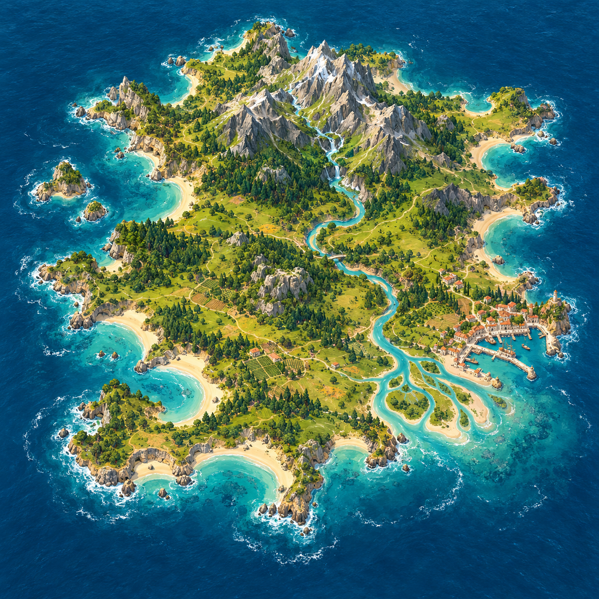

REGION 01 · OCEAN PLANET

DISCOVERY JOURNAL · VISUAL SAMPLE
A settlement beside the ocean becomes a place to greet the horizon.
BEEP: “A whole sea of possibilities. And now, somewhere to wave from!”